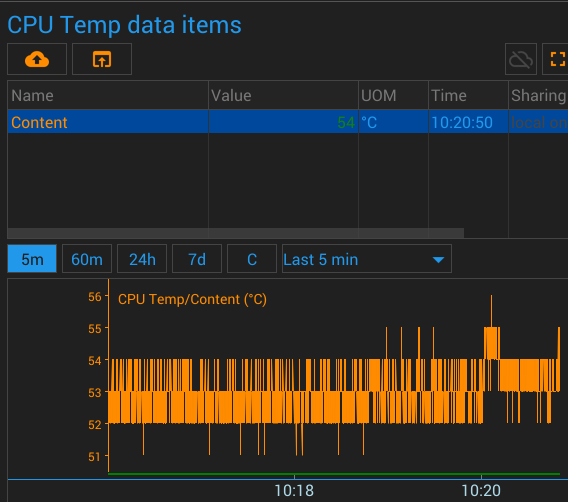
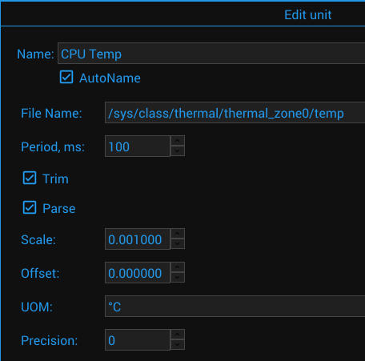

{#header.html#}
{%title=Gazer - Unit - File Content%}
{%description=Gazer - Unit for receiving data from a file%}
File Content Unit
Description
The unit reads the file contents and writes it to the data item. The maximum size to be read is 1 kilobyte.
Parameters
File Name
The absolute path to the file to read
Period
The period between sensor activities
Data Items
Content
Content of the file
Pictures
Screenshot

Configuration

{#bottom.html#}